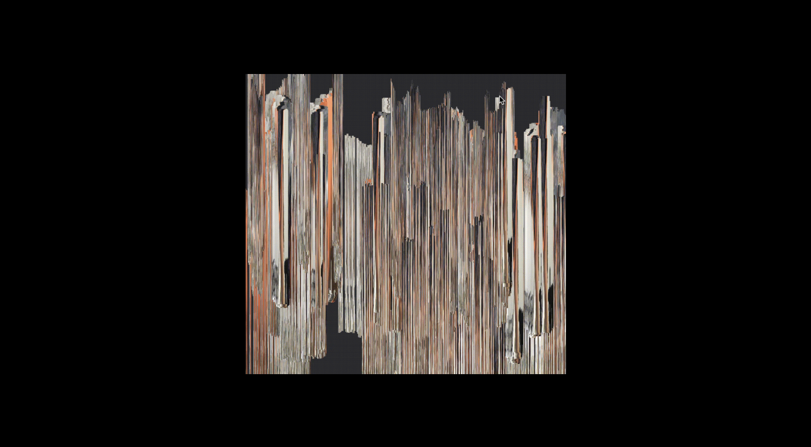
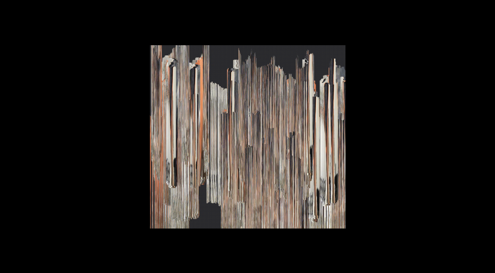

Webcam Waterfall
HTML, CSS, p5.js
This project is an interactive self-portrait of the user, based on the user's webcam data. The portrait is comprised of several "streams" of the user's face (that is, if they choose to have their face in front of the webcam).
All together, the collection of webcam captures and movements generates a glitchy waterfall, comprised by increasing "streams" of webcam captures. The waterfall forms a painterly effect, allowing the user to take the role as painter, adding new hues and shapes all via the webcam.
In a way, the resulting piece is never complete, infinitely enduring change—in response to its sensitivity to lighting, camera angles, and color palettes. It is quite literally a live piece of work, constantly updating in present time.


 
